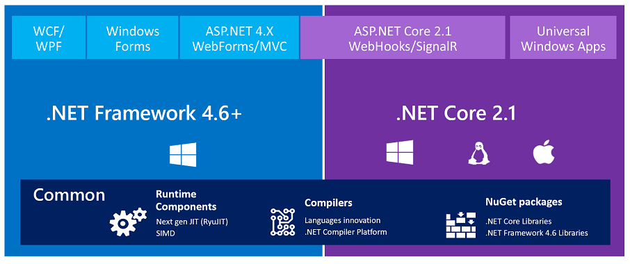
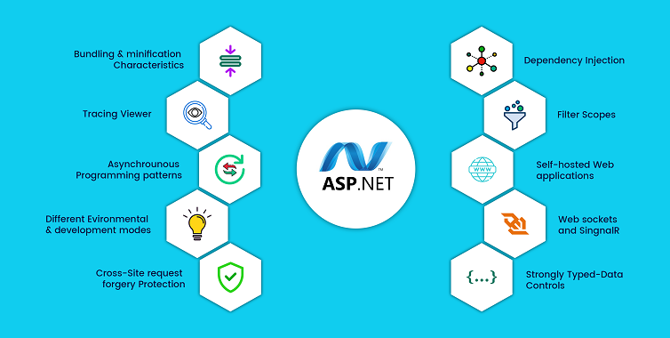

Tecnologías para desarrollo de aplicaciones web en ASP.NET

ASP.NET Core
ASP.NET es un marco de desarrollo web popular para compilar aplicaciones web en la Plataforma .NET.
ASP.NET Core es la versión de código abierto de ASP.NET, que se ejecuta en macOS, Linux y Windows. ASP.NET Core se lanzó por primera vez en 2016 y es un rediseño de las versiones anteriores de ASP.NET solo para Windows.
Características Clave de ASP.NET Core:
- Multiplataforma: Una de las características más destacadas de ASP.NET Core es su capacidad para funcionar en múltiples plataformas, incluyendo Windows, Linux y macOS. Esto significa que puedes desarrollar y alojar aplicaciones web ASP.NET Core en una variedad de sistemas operativos, lo que aumenta la flexibilidad de implementación.
- Código Abierto: ASP.NET Core es un proyecto de código abierto respaldado por Microsoft y una comunidad activa de desarrolladores. Esto significa que tienes acceso al código fuente y puedes contribuir a su mejora, además de aprovechar las actualizaciones y correcciones de errores continuas.
- Alto Rendimiento: ASP.NET Core está diseñado para ser altamente eficiente y escalable. Utiliza el servidor web Kestrel, que es rápido y liviano. Además, ofrece características como la ejecución en paralelo de solicitudes, lo que mejora el rendimiento y la capacidad de respuesta de tu aplicación.
- Modularidad: ASP.NET Core se basa en una arquitectura modular. Esto significa que puedes incluir solo los componentes necesarios para tu aplicación, lo que resulta en un menor consumo de recursos y una aplicación más ligera.
- Soporte para Contenedores: ASP.NET Core se integra de manera perfecta con tecnologías de contenedorización como Docker. Puedes empaquetar y distribuir aplicaciones ASP.NET Core en contenedores, lo que facilita la implementación y la administración de tus aplicaciones en entornos de contenedores.
- Lenguajes de Programación: Aunque ASP.NET Core se asocia principalmente con C#, también es compatible con F# y Visual Basic.NET. Esto te brinda la flexibilidad de elegir el lenguaje de programación que mejor se adapte a tus necesidades.
- Framework Web Moderno: ASP.NET Core es compatible con las prácticas de desarrollo web modernas, como el patrón Modelo-Vista-Controlador (MVC), el desarrollo de API RESTful y la autenticación flexible. Esto facilita la creación de aplicaciones web de vanguardia.
Pasos para crear una aplicacion web en ASP.NET Core

Paso 1: Instalar las Herramientas de Desarrollo
- Si aún no tienes las herramientas de desarrollo de ASP.NET Core instaladas, debes realizar esta instalación. Puedes descargar e instalar Visual Studio Community Edition, que es gratuito y completo para el desarrollo de aplicaciones web con ASP.NET Core, o puedes usar Visual Studio Code, que es un editor de código ligero y gratuito.
Paso 2: Crear un Nuevo Proyecto ASP.NET Core
- Abre Visual Studio o Visual Studio Code.
- En Visual Studio, ve a «Archivo» (File) > «Nuevo» (New) > «Proyecto» (Project). En Visual Studio Code, abre la terminal y crea una nueva carpeta para tu proyecto.
- Selecciona la plantilla de proyecto ASP.NET Core que desees utilizar. Puedes elegir entre plantillas como «Aplicación web de MVC», «API web», «Aplicación web vacía», entre otras, según el tipo de aplicación que desees crear.
- Especifica un nombre y una ubicación para tu proyecto y luego haz clic en «Crear» (Create) en Visual Studio o usa los comandos apropiados en Visual Studio Code para crear el proyecto.
Paso 3: Configurar y Personalizar la Aplicación
- Una vez que se haya creado el proyecto, puedes configurar y personalizar la aplicación según tus necesidades. Esto puede incluir la configuración de enrutamiento, la definición de modelos, vistas y controladores, la configuración de autenticación y autorización, entre otras tareas.
Paso 4: Desarrollar la Aplicación
- Comienza a desarrollar tu aplicación web escribiendo código en los archivos correspondientes. Si estás utilizando Visual Studio, puedes aprovechar las características de IntelliSense y depuración integradas para facilitar el desarrollo.
Paso 5: Compilar y Ejecutar la Aplicación
- Para compilar y ejecutar la aplicación, simplemente presiona F5 en Visual Studio o usa el comando de ejecución en Visual Studio Code. Esto iniciará la aplicación en un servidor web local y la abrirá en tu navegador predeterminado.
Paso 6: Probar y Depurar la Aplicación
- Prueba tu aplicación en el navegador y realiza pruebas para asegurarte de que funcione correctamente. Si encuentras errores, puedes depurar la aplicación utilizando las herramientas de depuración disponibles en tu entorno de desarrollo.
Paso 7: Implementar la Aplicación en un Servidor
- Una vez que tu aplicación esté lista para ser publicada, debes implementarla en un servidor web real. Esto puede involucrar la configuración de un servidor, la implementación de medidas de seguridad y la gestión de la escalabilidad, dependiendo de tus necesidades.
Paso 8: Mantenimiento Continuo
- Realiza un mantenimiento continuo de tu aplicación, lo que incluye la corrección de errores, la actualización de dependencias y la incorporación de nuevas características según sea necesario.
Estos son los pasos generales para crear una aplicación web en ASP.NET Core. Ten en cuenta que los detalles específicos pueden variar según el tipo de proyecto y las herramientas que utilices.